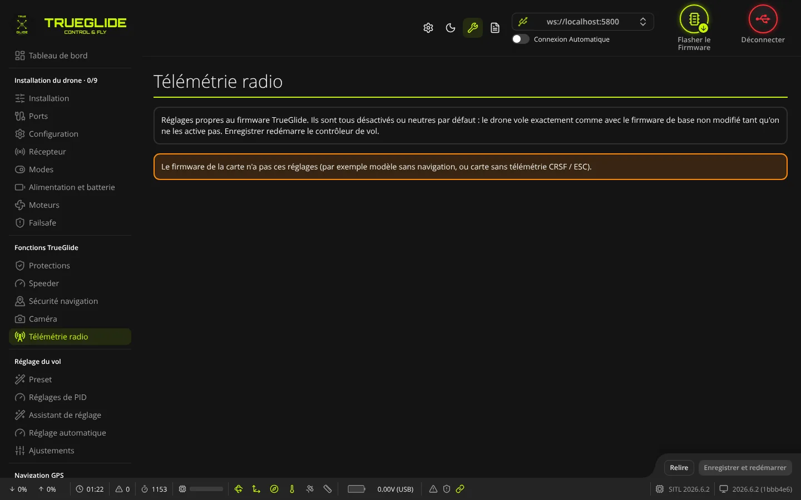
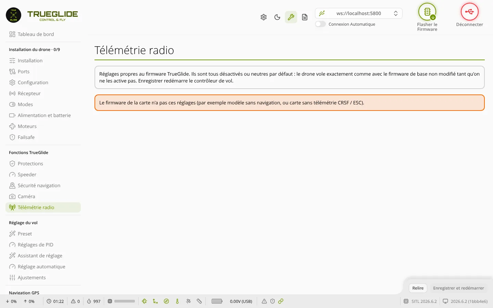

TRUE
TRUETélémétrie radio
L'onglet Télémétrie radio (groupe « Fonctions TrueGlide ») sert à envoyer la température de chaque ESC à la radio par la télémétrie ELRS / Crossfire (CRSF). La radio peut alors afficher ces températures et donner une alerte vocale.


Quand le réglage existe
Le firmware TRUEGLIDE ne contient ce réglage que si la carte a les deux :
- la télémétrie CRSF ;
- une source de température des ESC : télémétrie DShot ou télémétrie série des ESC (fil séparé).
Sinon, l'onglet affiche « Le firmware de la carte n'a pas ces réglages ».
Cadre « Télémétrie radio (ELRS / Crossfire) »
- Température des ESC vers la radio : interrupteur. Activé, la carte envoie toutes les 2 secondes une trame de température CRSF, avec une valeur par moteur, dans l'ordre des moteurs (8 moteurs au plus). Par défaut : coupé. Coupé, la télémétrie reste exactement celle du firmware de base.
Détails utiles :
- Rien n'est envoyé si un seul ESC ne donne pas sa température. Le firmware préfère ne rien envoyer plutôt que décaler les valeurs sur le mauvais moteur ou envoyer un faux 0 °C.
- Avec la télémétrie DShot, la température demande la télémétrie DShot étendue (réglage
dshot_edt), avec un ESC qui la fournit (par exemple Bluejay ou AM32). - Avec la télémétrie série des ESC, une donnée trop ancienne n'est pas envoyée.
- La commande du drone n'est pas touchée : seule la télémétrie vers la radio change.
Activer la température des ESC sur la radio
- Vérifier que le récepteur est en CRSF (ELRS ou Crossfire) et que l'interrupteur Sortie télémétrie est activé dans l'onglet Récepteur. Sans lui, aucune télémétrie n'est envoyée.
- Vérifier que les ESC donnent leur température : télémétrie DShot étendue, ou fil de télémétrie série (onglet Moteurs).
- Onglet Télémétrie radio : activer Température des ESC vers la radio.
- Cliquer sur Enregistrer et redémarrer. Le contrôleur de vol redémarre et le logiciel se reconnecte.
- Brancher la batterie, Hélices retirées. Sur la radio (EdgeTX 2.10 ou plus récent) : Télémesure, puis Découvrir les capteurs. Les capteurs « Temp » apparaissent, un par moteur.
- Régler l'alerte vocale sur ces capteurs dans la radio.
Cette fonction est vérifiée par des tests du firmware, pas encore en vol avec une vraie radio. Vérifier au sol que les valeurs arrivent avant de compter sur l'alerte.
Boutons en bas de l'onglet
- Relire : relit le réglage dans le contrôleur de vol. Un changement non enregistré est perdu.
- Enregistrer et redémarrer : actif seulement si le réglage a changé. Envoie le réglage puis enregistre : le contrôleur de vol redémarre.
Réglage équivalent dans le CLI
| Libellé dans l'onglet | Réglage CLI | Valeurs | Défaut |
|---|---|---|---|
| Température des ESC vers la radio | crsf_tlm_esc_temp | OFF / ON | OFF |
La même température des ESC peut aussi limiter les gaz en cas de surchauffe : voir l'onglet Protections.